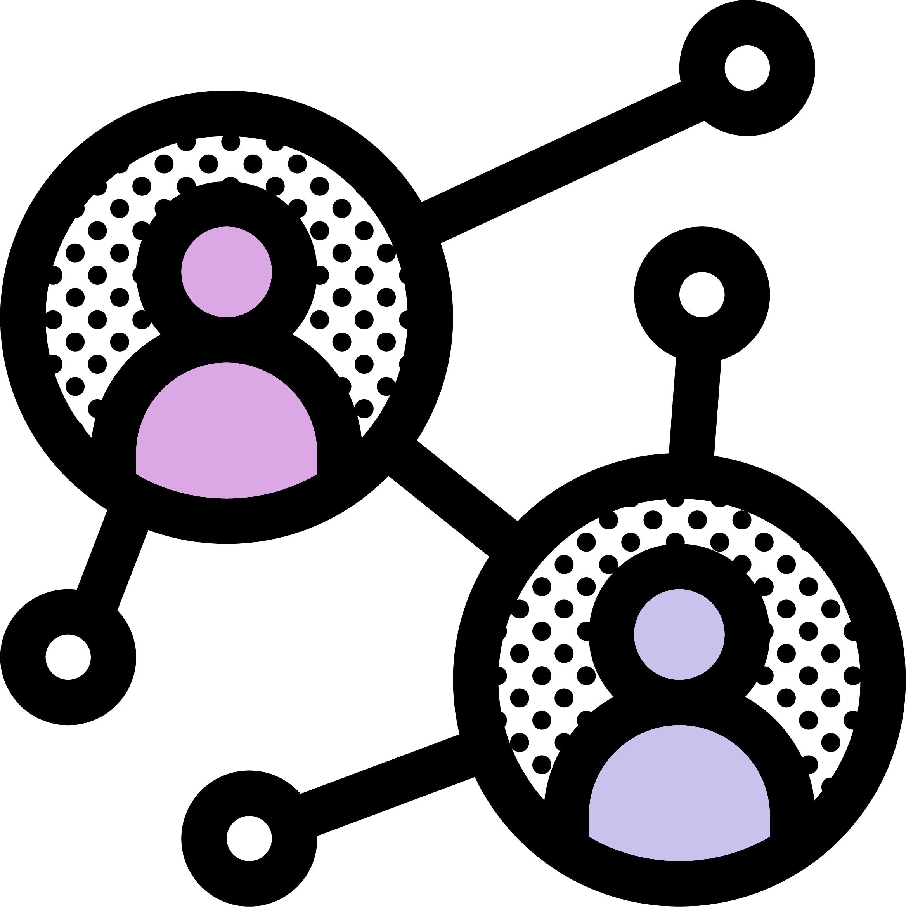

info-theory-book#



This Jupyter Book was created in March ‘22 with the intention to provide introductory tutorials and materials on information theory with applications to social neuroscience.
Adding notebooks to this Jupyter Book#
Follow the directions in the “Updating this Jupyter Book” section.
Add your notebook in the form of a Jupyter notebook file (e.g.,
your-new-notebook.ipynb) to this repository within thenotebooksfolder.In
_toc.yml, add another line under chapters like so:
- file: your-new-notebook
Updating this Jupyter Book#
To update the book, you can either push changes directly to the main branch (skip to step 4) or you can build the book locally with jupyter-book build and then push it to the main branch on this repo. We are syncing the code to main and then deploying the website through the gh-pages branch. Thanks to this workflow in our repo, when changes are pushed to the main branch they will be automatically deployed to https://cosanlab.github.io/info-theory-book through the gh-pages branch.
To locally build the book, to easily visualize any changes you make, I recommend using ghp-import. We are using the new version of jupyter-book, so make sure this package is up to date.
Clone the repo into your desired directory
git clone https://github.com/cosanlab/info-theory-book.git
Install packages
pip install jupyter-book ghp-import
Build website locally
By building the website locally you can preview any changes you make in your web browser. In other words, you will need to re-run this build command each time you make changes to the book to view them locally in your web browser. We are using the new version of jupyter-book which will run the notebooks to generate the figures by default.
jupyter-book build .
Push updated book to GitHub on the
mainbranch
This will automatically trigger a workflow to sync the updated book to the gh-pages branch of our github repository, which ultimately deploys the website to https://cosanlab.github.io/info-theory-book.